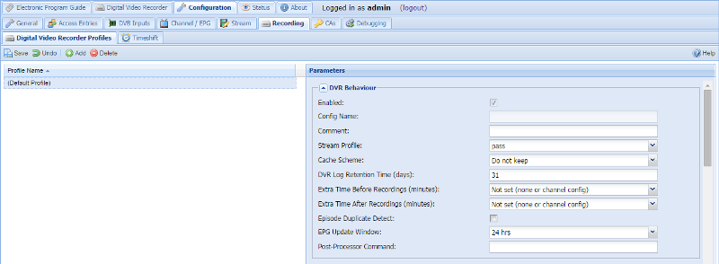
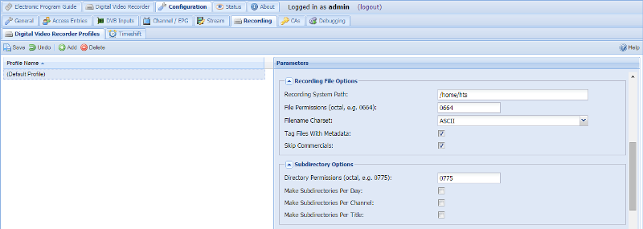
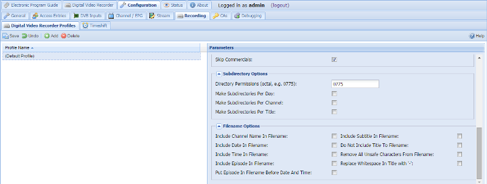

Configuration - Recording - Digital Video Recorder Profiles



EDITOR’S NOTE: Merge above images into one
EDITOR’S NOTE: Have overview screenshot showing profiles, then focus on config
This tab is used to configure operation of the Digital Video Recorder. It is not used for scheduling or administration of individual recordings.
Menu Bar/Buttons
Menu items are…
Configuration options
DVR Behaviour
Media container : Select the container format used to store recordings.
Cache scheme : Select the cache scheme used to store recordings. Leave as “system” unless you have a special case for one of the others.
Whenever you read or write data to the filesystems, the information is kept (cached) in memory for a while. This means that regularly-access files are available quickly without going back to the disc; it also means that there’s a disconnect when writing between the write request (from the application) and the actual write itself (to the disc/storage) as changes are buffered to be written in one go.
Unknown : A placeholder status, meaning that the configuration isn’t properly set.
System : Change nothing and rely on standard (default) system caching to behave as it normally would.
Do not keep : Tell the system that you’re not expecting to re-use the data soon, so don’t keep it in cache. The data will still be buffered for writing. Useful e.g. in a RAM-limited system like a Pi (given that you’re unlikely to be watching while recording, so data can be discarded now and read back from disc later).
Sync : Tell the system to write the data immediately. This doesn’t affect whether or not it’s cached. Useful e.g. if you’ve a particular problem with data loss due to delayed write (such as if you get frequent transient power problems).
Sync + Do not keep : A combination of last two variants above - data is written immediately and then discarded from cache.
DVR Log retention time (days) : Time that Tvheadend will keep information about the recording in its internal database. Notice that the actual recorded file will not be deleted when the log entry is deleted.
Extra time before recordings (minutes) : Specify the number of minutes to record before the events scheduled start time. Used to cope with small scheduling errors.
Extra time after recordings (minutes) : Specify the number of minutes to record after the events scheduled stop time. Used to cope with small scheduling errors.
Episode duplicate detection : If checked, broadcasts with matching title and matching non-zero episode number are considered duplicates.
EPG update window : Maximum difference between event start times when the EPG event is changed. TVHeadend uses a fuzzy match logic (using title, start times, duration, episode) to check when the event was changed.
Post-processor command : Command to run after finishing a recording. The command will be run in background and is executed even if a recording is aborted or an error occurred. Use the %e error formatting string to check for errors, the error string is “OK” if recording finished successfully.
Supported format strings:
| Format | Description | Example value |
|---|---|---|
| %f | Full path to recording | /home/user/Videos/News.mkv |
| %b | Basename of recording | News.mkv |
| %c | Channel name | BBC world |
| %C | Who created this recording | user |
| %t | Program title | News |
| %d | Program description | News and stories… |
| %e | Error message | Aborted by user |
| %S | Start time stamp of recording, UNIX epoch | 1224421200 |
| %E | Stop time stamp of recording, UNIX epoch | 1224426600 |
Example usage: /path/to/ffmpeg -i %f -vcodec libx264 -acodec copy
“/path/with white space/%b”
You need to use quotes or escape white spaces if you want white spaces in an argument.
Recording File Options
Recording system path : Path to where Tvheadend will write recorded events. If components of the path does not exist, Tvheadend will try to create them.
File permissions : The permissions to be set on the resultant recording files.
This is useful if you need to manipulate the files after recording under a different user ID, e.g. to chop out commercials.
Common examples:
| Mode | Permissions |
|---|---|
| 0644 | rw-r–r– |
| 0664 | rw-rw-r– (default) |
| 0666 | rw-rw-rw- |
Note that the applicable umask applies, so 0666 with umask 0022 will produce 0644 (rw-r–r–). See also Directory permissions in Subdirectory Options.
Filename charset : Character set for the created filename. Tvheadend will try to approximate characters to similarly looking ones.
Tag files with metadata : If checked, media containers that support metadata will be tagged with the metadata associated with the event being recorded.
Skip commercials : If checked, commercials will be dropped from the recordings. At the moment, commercial detection only works for the swedish channel TV4.
Subdirectory Options
Directory permissions : The permissions to be set on any sub-directories created for recordings.
This is useful if you need to manipulate the files after recording under a different user ID, e.g. to chop out commercials.
Common examples:
| Mode | Permissions |
|---|---|
| 0755 | rwxr-xr-x |
| 0775 | rwxrwxr-x (default) |
| 0777 | rwxrwxrwx |
Note that the applicable umask applies, so 0777 with umask 0022 will produce 0755 (rwxr-xr-x). See also File permissions in Recording File Options.
Make sub-directories per day : If checked, create a new directory per day in the recording system path. Only days when anything is recorded will be created. The format of the directory will be ‘YYYY-MM-DD’ (ISO standard)
Make sub-directories per channel : If checked, create a directory per channel when storing events. If both this and the ‘directory per day’ checkbox is enabled, the date-directory will be parent to the per-channel directory.
Make sub-directories per title : If checked, create a directory per title when storing events. If the day/channel directory checkboxes are also enabled, those directories will be parents of this directory.
Filename Options
Include channel name in title : If checked, include the name of the channel in the event title. This applies to both the titled stored in the file and to the file name itself.
Include date in title : If checked, include the date for the recording in the event title. This applies to both the titled stored in the file and to the file name itself.
Include time in title : If checked, include the time for the recording in the event title. This applies to both the titled stored in the file and to the file name itself.
Include episode in title : If checked, include the season and episode in the title (if such info is available).
Include subtitle in title : If checked, include the episode subtitle in the title (if such info is available).
Put episode in filename before date and time : If checked, insert the episode number before the data and time rather than after (assumes Include date, Include time and Include episode options are set).
Remove all unsafe characters from filename : If checked, all characters that could possibly cause problems for filenaming will be replaced with ‘_’.
Applies to characters:
- not supported by Windows: / : \ < > | * ? ’ "
- control characters (ASCII code below 32)
- control and national characters (ASCII code above 122)
Replace whitespace in title with ‘-’ : If checked, whitespace characters (spaces and tabs) will be replaced with ‘-’.
Use Windows-compatible filenames : If checked:
- special characters not supported by Windows like: / : \ \< > | * ? ’ “ will be replaced with ‘_’
- trailing spaces ‘ ’ and dots ‘.’ will be removed
Changes to any of these settings must be confirmed by pressing the ‘Save configuration’ button before taking effect.